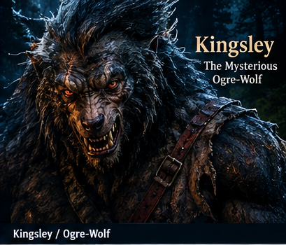
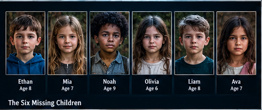
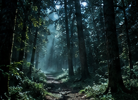
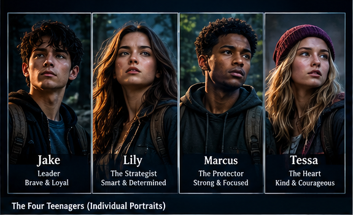
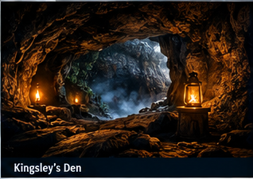
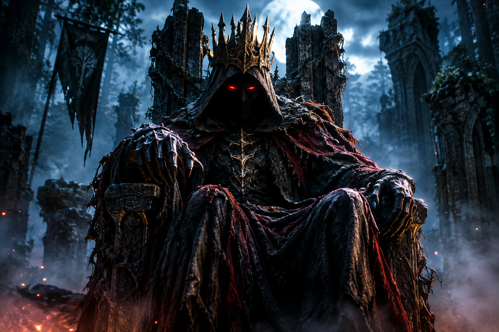
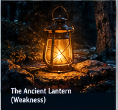
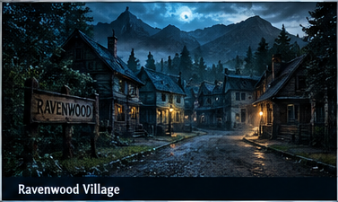

Long before the six children disappeared, Ravenwood was protected by a brave Guardian named Kingsley. He watched over the village and protected its people from the dangers hidden deep within the forest.
Everything changed when a mysterious ritual was performed in the Forgotten Temple. The ritual was supposed to give Kingsley greater power to protect Ravenwood. Instead, something went terribly wrong. Kingsley was transformed into a terrifying creature known as the Ogre-Wolf.
The villagers feared him and believed that the creature had become evil. They never discovered the truth. Kingsley disappeared into the forest, where strange events continued to occur.

Kingsley, the Guardian transformed by the ancient curse.

Six children have vanished into the darkness surrounding Ravenwood.
Years later, six children vanished from Ravenwood and disappeared into the dark forest. The villagers immediately blamed the Ogre-Wolf.
Four teenagers—Jake, Lily, Marcus, and Tessa enter the forest to rescue the children. At first, they believe their mission is simple: find the Ogre-Wolf and stop him.

Every step deeper into the forest brings the teenagers closer to the truth about Kingsley.

Four teenagers. Six missing children. One dangerous mystery.
But as they travel deeper into the forest, they begin finding clues that challenge everything they have been told.
Kingsley may not be the real enemy. The Ogre-Wolf is still protecting something deep within the forest, and the missing children may be connected to an ancient power.

Deep within the forest lies Kingsley's forgotten refuge.

Before entering Ravenwood, discover the darkness surrounding Kingsley, the cursed Guardian, and the mysterious Hollow King.
The Hollow King, the ancient evil threatening Ravenwood.
Hidden behind the disappearances is an ancient evil known as the Hollow King. He wants the power that once belonged to the Guardian and has been manipulating the villagers from the shadows.
The Hollow King knows that Kingsley's curse is the key to unlocking the Guardian's power. The six children are part of a plan that could allow him to control Ravenwood.

The teenagers must decide whether to destroy the Ogre-Wolf or discover a way to break the curse. Their choices will determine whether Kingsley remains a monster, returns to his human form, or becomes the final Guardian of Ravenwood.

Ravenwood, a village hiding a dark and dangerous secret.
Enter the dark world of Ravenwood, where an ancient curse has transformed its Guardian into the terrifying Ogre-Wolf. Four teenagers must uncover the truth, follow the clues, and rescue six missing children before it is too late.